| Folding in the Java editor |
The Java editor now supports folding of code regions. Hovering
over a folded Java element lets you peek at the hidden code:

Currently, import statements, comments, types and method bodies
can be folded. These, and whether folding should be enabled on new
editors can be configured on the Folding tab on the Java > Editor
preference page:
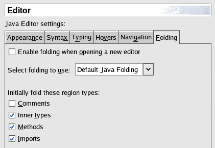
|
| Advanced highlighting |
The Java editor can now highlight source code according to its
semantics (for example: static fields, local variables, static method
invocations). When advanced highlighting is enabled via the Java
> Editor > Syntax preference tab, the new advanced
highlighting options show up in the list.
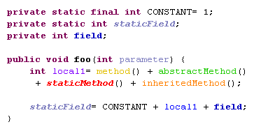
There are also new options for highlighting operators and
brackets, and Italic is a newly supported style.
|
| Quick type hierarchy view |
Select a type, method, or package reference in the Java editor
and press Ctrl+T to see a quick type hierarchy view. For methods, you
see all subtypes and supertypes that provide this method.
Repeat CTRL+T to toggle between the normal type hierarchy and the
supertype hierarchy view.
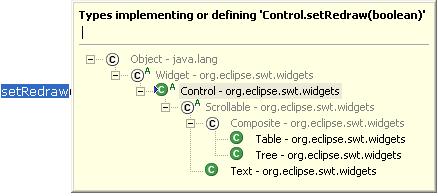
|
| Quick Outline shows inherited
members |
The quick outline (Source > Open Outline, Ctrl+O) in
the Java editor now shows inherited members after repeating the key
sequence Ctrl+O:
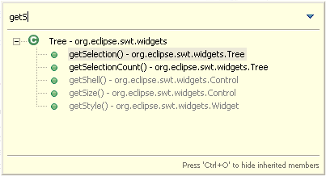
Likewise for Quick Structure (Ctrl+F3).
|
| Smart Insert typing mode in Java
editor |
The Java editor now has a Smart Insert mode which can be toggled
via Edit > Smart Insert Mode
(Ctrl+Shift+Insert).
In Smart Insert mode, the editor provides Java-specific extras
which can be configured on the Java > Editor > Typing
preference tab. The Smart Semicolon and Smart Opening Brace options
for example move the caret to the end of the line before inserting
the semicolon or closing brace, respectively.
The Insert, Smart Insert and Overwrite typing modes have
distinctive carets by default. This can be configured on the Java
> Editor > Appearance preference tab.
|
| Update imports on paste |
Copying or cutting Java code also captures information about
which import declarations are needed by the copied code. The needed
imports are now added automatically when the code is pasted. This
feature can be configured with the Java > Editor > Typing
> Update imports on paste preference setting. |
| Improved cursoring through Java
names |
The Java editor's word-at-a-time actions now respect the typical
"CamelCase" notation of Java identifiers. For example, Next Word
on the identifier getFoo makes an additional stop
between get and Foo. Cursoring behavior for
Java names is controlled by an option on the Java > Editor >
Navigation preference page. |
| New code formatter |
The Java code formatter has many improvements to offer: The Java
> Code style > Code Formatter preference page lets you
choose from existing profiles, define your own, and share them with
others.
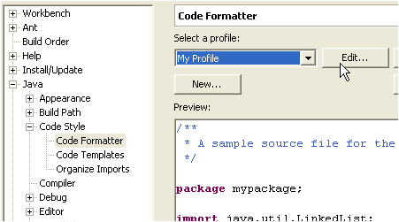
The new formatter is highly configurable, with over 140 options
covering everything from brace positions to where to wrap long lines.
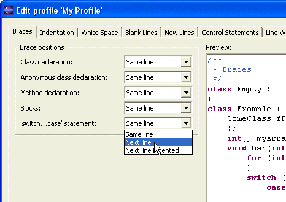
|
| Block commenting |
A text selection in the Java editor can be quickly turned into a
block comment using Source > Add Block Comment. Conversely,
the Source > Remove Block Comment command removes the block
comment enclosing the cursor position. |
| Toggle Comment command |
The old Source > Comment and Source > Uncomment
commands in the Java editor have been replaced by the Source >
Toggle Comment (Ctrl+/) command that uncomments the currently
selected source lines if all of them are commented and comments them
otherwise. (You can bind keyboard shortcuts to the old commands,
which are still available, via the Workbench > Keys
preference page.) |
| Incremental content assist |
Check Insert common prefixes automatically on the Java
> Editor > Syntax preference tab to use shell-style
incremental completion in the Java editor. If the available
completions do not have a common prefix, the proposal popup is
displayed. |
| Dynamically marking occurrences in
file |
Occurrences of the selected element can be marked in the Java
editor with the new Mark Occurrences toolbar button ( ) or
command (Alt+Shift+O). On the Java > Editor > Mark
Occurrences preference page, you can configure the elements to be
marked. ) or
command (Alt+Shift+O). On the Java > Editor > Mark
Occurrences preference page, you can configure the elements to be
marked.
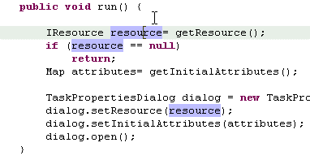
The occurrences of the selected element are marked using Occurrences
annotations, whose presentation can be configured using the
Annotation preference page (Workbench > Editors >
Annotations).
When the selected element changes, the marked occurrences are
automatically updated. By default, marked occurrences are sticky,
i.e. remain highlighted even when there is no valid Java element at
the current caret position.
Marked occurrences can quickly be removed using the Remove Occurrence
Annotations source command (Alt+Shift+U). |
| Highlight method exit points |
Placing the cursor on the return type of a method highlights all
method exit points. Highlighting exit points can be enabled via the
preference Java > Editor > Mark Occurrences.
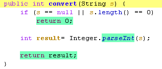
|
| Mark locations of thrown exceptions
|
When an exception is selected, places where that exception is
thrown can be marked in the Java Editor by triggering the action Search
> Exception Occurrences. The places are marked automatically
if occurrence marking is turned on via the Java > Editor > Mark
Occurrences preference page.
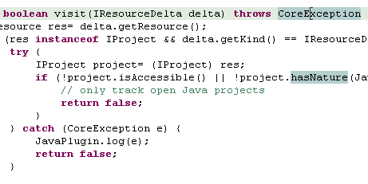
|
| Java editor shows overridden
methods |
The new Override Indicator annotation (see Workbench >
Editors > Annotations preference page) flags a method that
implements or overrides another one. By default, override and
implements icons appear in the left-hand vertical ruler; click on the
icon to navigate to the super method:
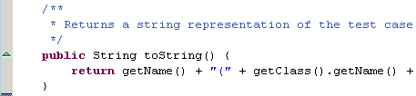
|
| Multiple annotations shown in
roll-over hover |
When multiple annotations are displayed in the text editor's
ruler, they are displayed side by side when hovering over them.
Warnings and actions, such as quick fixes, setting breakpoints, and
adding bookmarks, can be accessed separately. This functionality is
disabled by default, but can be enabled on the Java > Editor
> Hovers preference tab.

|
| New Quick Assist cue |
As you type in a Java editor a Quick Assist cue (green light
bulb) appears in the left margin when there's a Quick Assist
available. Use Edit > Quick Fix (Ctrl+1) or click on the
light bulb to see the proposals. This feature can be enabled by
checking Lightbulb for quick assists from the Java >
Editor > Appearance preference tab.
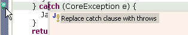
|
| Linked mode for Quick Fixes |
Several Quick Fix results now appear in linked (template) mode.
Use Tab and Shift+Tab after the invocation of a Quick Fix to navigate
between a generated return type, method name, argument types and
argument names. Examples of Quick Fixes using the linked mode:
- Create new method
- Create new field, parameter or local variable
- Add new argument
- Assign statement to new local or field
The linked mode offers additional suggestions: Different names,
types, or arguments. |
| Improved name guessing |
When adding fields, variables or parameters, quick fixes try to
guess good names for new identifiers. Using the new linked mode
feature, more than one suggestion is offered now.
Example of argument guessing:
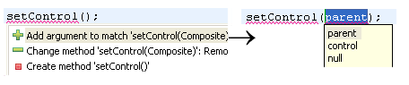
Example of exception guessing:
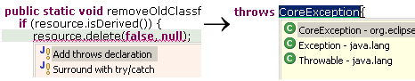
|
| Improved Quick fixes for parameter
mismatches |
Several new Java quick fixes for mismatched parameters have been
added, including offers to cast, swap, add, or remove arguments or
method parameters.
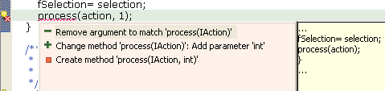
|
| New Quick Assists |
New Quick Assists have been added to the Java editor. Try Ctrl+1
on
- variables, to split and join its variable declaration
- an 'if' statement to convert its body into a block, or to add a
new 'else' block
- a method parameter to assign it to a new field
- a method declaration to create the method in a supertype
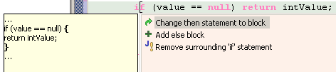
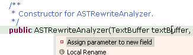
|
| Create getters and setters with
code assist |
Aside from creating overriding methods, code assist also offers
to create getters, setters, default constructors and method stubs.
Set the cursor in the type body between members and press Ctrl+Space
to get the proposals that create a method stub.

|
| Fast ways to create a constructor |
The new Java command Source > Generate Constructor using
Fields creates a new constructor that initializes selected
fields. You choose the fields to be initialized from extra
constructor parameters whose order is controlled via up/down buttons
in the dialog.
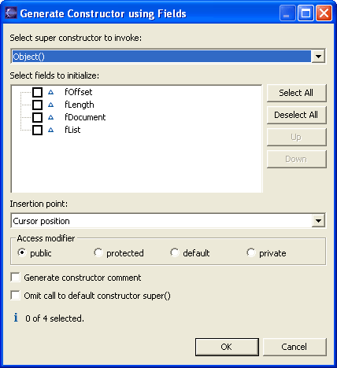
The Source > Add Constructors from Superclass command
now pops up a dialog so that you can choose which of the superclass's
constructors should be inserted into the current class. The quick
assist feature can still be used to insert without prompting.
|